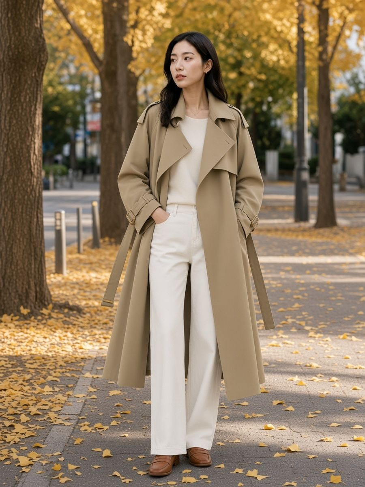

GINKGO AVENUE EDIT
그레이·블랙·카키 3가지 컬러 중 원하는 1벌
넓게 젖힌 노치드 라펠과 견장, 버클 스트랩 소매를 갖춘 오버핏 미디 트렌치코트입니다. 구성은 코트 1벌이며, 컬러와 사이즈를 하나씩 골라 주문하시면 됩니다.
구성 코트 1벌 | 컬러 3종 택1 | 총장 107~109cm | 사이즈 S ~ L |
OPTION
그레이·블랙·카키는 각각 별도의 옵션입니다. 옵션 1개를 선택하면 해당 컬러·사이즈의 코트 1벌이 배송됩니다.
그레이 코트 1벌 SML | |
블랙 코트 1벌 SML | |
카키 코트 1벌 SML |
총 9개 옵션 (그레이 · 블랙 · 카키 × S · M · L)
MOOD
어깨에서 자연스럽게 떨어지는 오버핏에 무릎 아래까지 내려오는 미디 기장으로, 앞을 열어 걸치기만 해도 실루엣이 길게 정리됩니다. 소매 끝 버클 스트랩이 클래식 트렌치의 디테일을 살리면서 손목 라인을 단정하게 잡아 줍니다.
KHAKI · GINKGO AVENUE
CHECK POINT
클래식 트렌치의 디테일을 오버핏 실루엣에 담았습니다.
01
WIDE LAPEL
넓게 젖힌 노치드 라펠이 얼굴 주변을 시원하게 열어 주고, 앞을 열어 입어도 라인이 흐트러지지 않습니다.
02
BUCKLE CUFF
소매 끝 스트랩을 버클에 끼워 둘레를 조절할 수 있습니다. 조이면 단정하게, 풀어 늘어뜨리면 여유 있게 연출됩니다.
03
EPAULETTE
어깨 견장이 클래식 트렌치의 인상을 더하고, 자연스럽게 떨어지는 어깨 라인이 오버핏 실루엣을 편안하게 만들어 줍니다.
04
MIDI LENGTH
총장 107~109cm로 무릎 아래까지 내려오는 미디 기장입니다. 와이드 팬츠나 스커트 위에 걸쳐도 비율이 길게 정리됩니다.
COLOR
그레이 | 블랙 | 카키 |
BLACK · EVENING STREET
ORIGINAL DESIGN
모델 없이 코트만 촬영한 단독 컷입니다. 노치드 라펠, 어깨 견장, 버클 스트랩 소매와 미디 기장을 확인하세요.
그레이 | 블랙 | 카키 |
PRODUCT INFO
| 컬러 | 그레이 / 블랙 / 카키 (택1) |
|---|---|
| 사이즈 | S · M · L |
| 소재 | 합성섬유 |
| 칼라 | 노치드 라펠 |
| 여밈 | 더블 브레스티드 |
| 소매 | 긴소매 · 버클 스트랩 |
| 기장 | 미디 (총장 107~109cm) |
| 성별 | 여성 |
| 구성 | 코트 1벌 |
모니터 환경에 따라 실제 색상과 약간 차이가 있을 수 있습니다.
REAL DETAIL
라펠, 소매 버클, 어깨 견장을 가까이에서 확인하세요.
라펠 |
소매 버클 |
어깨 견장 |
MODEL CAST
| 이름 | 정수아 · Jung Sua |
|---|---|
| 성별 | 여성 |
| 국적 | 대한민국 |
| 관심사 | 아웃도어 · 여행 · 자연광 |
| 소속사 | AMBA (AI Ambassador) |
SIZE GUIDE
| 사이즈 | 총장 | 소매길이 | 소매둘레 | 가슴둘레 |
|---|---|---|---|---|
| S | 107 | 52.8 | 31.8 | 108.6 |
| M | 108 | 53.8 | 33.8 | 112.6 |
| L | 109 | 54.8 | 35.8 | 116.6 |
단위 cm · 수작업 측정으로 2~3cm 오차가 있을 수 있습니다.
아시아 사이즈 기준의 여유 있는 오버핏입니다. 가슴둘레와 소매길이를 평소 입는 코트와 비교해 선택해 주세요.
DETAILS
| Brand | LEXI |
|---|---|
| Product | 벨티드 소매 오버핏 트렌치코트 |
| Internal name | New Women's Loose Mid-length Trench Coat |
| Package | 코트 1벌 |
| Fit | 오버핏 · 미디 기장(총장 107~109cm) · 여성 |
| Color | 그레이 / 블랙 / 카키 중 택1 |
| Size | S · M · L |
| Season | 봄 · 가을 간절기 |
| Material | 합성섬유 |
| Care | 세탁 전 제품 라벨의 관리 방법을 확인해 주세요 |
LEXI IS RPCOW.
Radiant Presence, Captivating Outfit for your Wardrobe.
STYLING
CITY
니트와 와이드 슬랙스 위에 앞을 열어 걸치면 출근길에도 부담 없는 미니멀 룩이 완성됩니다.
WEEKEND
화이트 데님과 로퍼를 매치해 은행잎 길 산책에 어울리는 가벼운 주말 코디로 입어 보세요.
CLASSIC
소매 스트랩을 조이고 라펠을 세우면 단정한 클래식 트렌치 무드로 연출할 수 있습니다.
FAQ
Q. 세 가지 컬러가 함께 오나요?
아닙니다. 그레이·블랙·카키는 각각 별도의 옵션입니다. 주문 시 선택하신 컬러·사이즈의 코트 1벌이 배송됩니다.
Q. 사이즈는 어떻게 고르나요?
아시아 사이즈 기준이며 여유 있는 오버핏으로 제작되었습니다. 평소 사이즈를 기준으로 하단 사이즈 가이드의 가슴둘레·소매길이를 비교해 선택해 주세요.
Q. 소매 스트랩은 조절되나요?
소매 끝 스트랩을 버클에 끼워 원하는 둘레로 조여 착용할 수 있습니다.
Q. 세탁은 어떻게 하나요?
세탁 전 제품 안쪽 라벨의 관리 방법을 확인해 주세요.
Q. 교환·반품은 어떻게 하나요?
해외배송 상품으로 교환·반품 시 해외배송 왕복비용 48,000원이 공제됩니다. 제품 하자의 경우 절반을 판매자가 부담하여 24,000원이 공제됩니다.
SHIPPING
필독 · 교환/반품 비용 (해외배송 왕복비용) 48,000원
- 이 상품은 해외배송 상품이므로, 반품비용이 해외택배 기준으로 발생하여 공제되므로 구매 시 반드시 참고 바랍니다. 단순 변심 등 무분별한 구매를 삼가 주시기를 부탁드립니다.
- 다만 제품의 하자가 있는 경우에는 절반을 판매자가 부담하여 24,000원 반품비용이 공제됩니다.
| 배송방법 | 순차배송 · 한진택배 |
|---|---|
| 배송비 | 무료배송 |
| 배송기간 | LEXI 소싱 해외배송 · 결제 후 영업일 기준 7~14일 도착 |
| 도서산간 | 배송이 제한되거나 일반 지역보다 3~5일 추가 소요될 수 있습니다 |
| 통관 | 해외배송 상품으로 수령인 개인통관고유부호가 필요할 수 있습니다 |
| 교환·반품 | 수령 후 7일 이내 접수 · 해외배송 왕복비용 48,000원 공제 (제품 하자 시 24,000원) |
| 반품 제한 | 사용 흔적, 세탁, 택·라벨 훼손, 구성품 누락 등으로 상품 가치가 감소한 경우 교환·반품이 제한될 수 있습니다 |
| 유의 | 모니터 환경에 따라 실제 색상과 다소 차이가 있을 수 있습니다 |
상품의 내용이 표시·광고와 다른 경우에는 관계 법령과 쿠팡 정책이 우선 적용됩니다.
LEXI Curated · 해외배송 · © LEXI